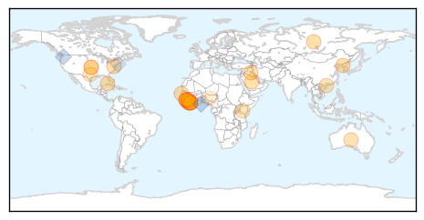

Ebola
30-Day Web Trend
0 alerts, 0 warnings

30-Day Twitter Trend
0 alerts, 0 warnings

Article Locations
Article Confidences

Top Articles:
- 0.999
- Gaining Trust Of Ebola Victims Just As Important As Funding
- 0.998
- Sierra Leone better positioned now to fight Ebola
- 0.997
- First Ebola clinic for pregnant women in Sierra Leone
- 0.996
- Liberian Ambulance Team Joins Sierra Leone For Ebola Fight
- 0.995
- Pivotal Ebola vaccine trials to start this month or next: WHO
- 0.994
- World Health Organisation chief Margaret Chan reluctant to dole out tough medicine
- 0.993
- Two leading Ebola vaccines appear safe, further tests starting
- 0.993
- Sudan Vision Daily
- 0.992
- Wendy Orent: Why predictions of lethal pandemics should be ignored
- 0.992
- Over 2,000 receive training in Ebola management
- 0.991
- No Ebola cases registered in Saudi Arabia
- 0.982
- Ellen commends First Responders for commitment to eradicate Ebola in Sub-region
- 0.980
- Some of Grasso's own constituents likely 'freeloaders'
- 0.980
- Hospital imposes quarantine to contain flu
- 0.951
- Playing catch helps prevent falls in the older adults
- 0.951
- 'Al Qaeda plotting 'mass casualty' attack in West'
- 0.917
- President Koroma Calls for Effective Coordination To Finally Eradicate Ebola
- 0.905
- Sierra Leonean in Australia Rescues Ebola Victims
- 0.872
- Chinese Ambassador Zhao Yanbo Hands Over China's New Gratuitous Support to Sierra Leone - Sierra Leone
- 0.835
- Ebola virus continues to fuel Sierra Leone's economic freefall
- 0.814
- Kenya : Workers heed call of duty in Ebola hit nations
- 0.809
- “Turning a Big Ship is not Just Like turning around a Canoe”
- 0.770
- Fort Carson soldiers in quarantine
- 0.746
- Mission to Liberia has been a 'huge success story,' Fort Bliss officer says
- 0.744
- Akron bridal store at center of Ebola scare closing - Tallmadge Express
- 0.678
- With trip to Liberia comes caution on return
- 0.538
- Nigeria Commits Additional 1.5 Million To Aid Ebola Fight In Liberia
Top Tweets:
- 0.890
- AWESOME!! Together we can stop Ebola. TackleEbola
- 0.888
- Ebola Update: 20,972 confirmed, probable, and suspected cases reported in 3 most affected countries, with 8,259 deaths. EbolaResponse
- 0.823
- Michigan health officials monitor worker for Ebola http://t.co/FqyBwsNsyj
- 0.788
- Once the Ebola outbreak is over, here's one for the bucket list: surfing Sierra Leone http://t.co/ry5sy8VTTr
- 0.666
- ebola & a normal life - http://t.co/azynScsZ3T Coping w infectious disease
- 0.628
- Sierra Leone declares first Ebola-free district http://t.co/YYaVh4bGpH
Measles
30-Day Web Trend
2 alerts, 0 warnings

30-Day Twitter Trend
0 alerts, 0 warnings

Article Locations

Article Confidences

Top Articles:
- 0.986
- While recent reports of possible measles in Wayne proved unfounded, disease remains a danger
- 0.972
- Disneyland measles outbreak: 19 fall ill after visiting theme parks
- 0.814
- Is the Anti-Vaccination Movement to Blame for Disneyland’s Measles Outbreak?
- 0.605
- Cases of Measles Linked to California Disney Parks
- 0.570
- 19 measles cases linked to Disneyland
- 0.511
- Safe breastfeeding key to improve children's health - World
- 0.509
- Disney Park Visitors Contract Measles
Top Tweets:
-
No tweets found for Jan 11, 2015